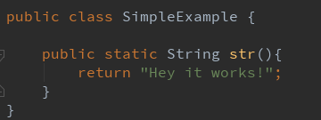
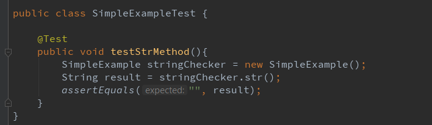
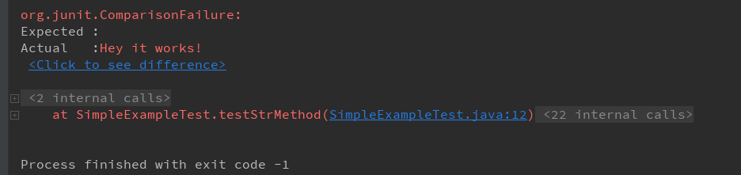
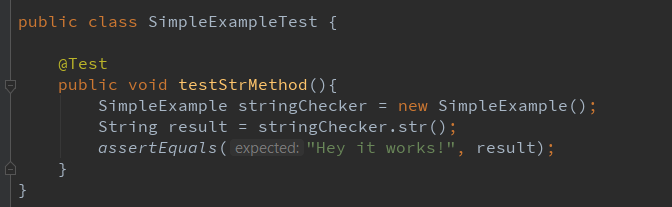
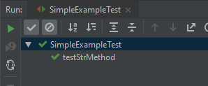

AssertEquals
Best way to learn is by doing, so let me give you some examples you can try out for youself!
Here we have a really simple method that spits out a string that says "Hey it works!"

A really simple way to create a test for the class is by clicking ALT+ Enter (for Windows) on class name and selecting "Create Tests.
Next from the dropdown you'll want to select JUnit4 and hit "Ok"
For this example we will be creating a "AssertEquals" test. This is testing that if we inserted x that y will be correct. Here let me show you
OH! Really important you use the "@Test" annotation because that will tell your complier that this is a test you're creating
As you can see in this test it creates a "stringChecker" object of the type "SimpleExample".
I probably could've named this better but its my first go at this okay. Next we have the result variable! ooooo! exciting stuff now. This variable is of type String.
Obviously because there's a word "String" right infront of it. Now this result variable will equal the "stringChecker" we created from the line above. Since this is
created from our SimpleExample object (class.. this object has the name of our class because its referencing the same thing) we can use its methods! Yay!
The method we want to snag is the "str" method. (NOW! scroll up a little and look at what our class is called and the method is called. Do you see the connection?!?)
As you can see the assertEquals statement requires two things. A expected and a acutual. We want our acutual value to be whats passed down through the code. In other
words in the code when we go to that class and look at that method we want to take that string. When we get it we put in into that result variable and we want to make sure
what we type for the expected side equals that actual side

Now since we're comparing nothing to nothing then obviously it will pass. Lets put our result in for the acutal value and see what happens

This error is pretty cool! It tells us what we have for our expected (which is nothing since we didnt put anything there) and what our actual value is! Not only that!!
it also gives us a link to where in the test its failing! How cool is that!!

Now lets stop playing around and make this puppy work. Since we want our test to pass we gotta make sure both of those two values equal. So the correct way to do this would
be to not run it and copy and paste the actual into the expected. It's not going to help you understand what you're doing SO DON'T DO IT!
Better yet lets go back to the file were testing (this is the SimpleExample.java class) and lets copy that string and put it in for the expected.
Because we expect that answer to be that string. See how coding makes sense at times, its great! And finally, lets run this!

TA-DA!! our test passes!! Congradulations!! You just read (and maybe did it along with me) a very simple assertEquals example!
